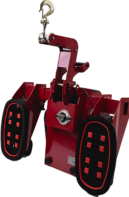

Vi holder dine maskiner kørende.
Roucon Teknik ApS er din partner inden for reparation, fejlfinding, vedligehold og mobil service af erhvervsmaskiner.

Bygget på erfaring.
Drevet af handling.
Roucon Teknik ApS er grundlagt af Simon Roulund med en simpel vision: levere pålidelig maskinservice, der holder erhvervsmaskiner i drift og minimerer nedetid for vores kunder.
Vi servicerer et væld af forskellige erhvervsmaskiner — fra let udstyr til tungt materiel. Vores kunder tæller store udlejningsvirksomheder som Stark samt producenter som Starke Arvid (SE), der stoler på os til at holde deres maskinpark kørende.
Når din maskine er nede, er vi kun et opkald væk.
Vi kommer til dig med kompetent viden og et smil på læben. Klar til at løse opgaven på stedet.
Vi forstår at nedetid koster penge. Derfor prioriterer vi hurtige løsninger der holder.
Stark og andre store udlejere samt producenter som Starke Arvid (SE) vælger Roucon Teknik som deres servicepartner.

Hvad vi gør — og gør godt.
Fra akut reparation til forebyggende vedligehold. Vi tilbyder den komplette løsning til virksomheder, der er afhængige af deres maskiner.
Reparation
Hurtig og effektiv reparation der minimerer din nedetid. Vi diagnosticerer fejlen, skaffer dele og får din maskine op at køre igen — så hurtigt som muligt.
Fejlfinding
Systematisk diagnosticering af mekaniske og elektriske fejl. Vi finder roden til problemet, så du ikke ender med den samme fejl igen og igen.
Vedligehold
Forebyggende service der forlænger dine maskiners levetid og reducerer risikoen for uplanlagte nedbrud. En investering der betaler sig selv hjem.
Mobil service
Vi kommer til dig — direkte på din lokation. Vi medbringer det nødvendige udstyr, så opgaven løses på stedet uden transport af maskinen.
Upclimber specialist
Som autoriseret Starke Arvid forhandler tilbyder vi salg, service, reparation og lovpligtigt årseftersyn af Upclimbers.
Læs mere →

Lad os tale om din opgave.
Ring, skriv eller kig forbi. Vi er klar til at hjælpe dig med at holde dine maskiner i drift.
Maskinen er nede?
Ring til os nu, og vi finder den hurtigste løsning. Vi står klar med det rigtige udstyr til at løse dit problem på stedet.
Ring +45 22 32 12 29